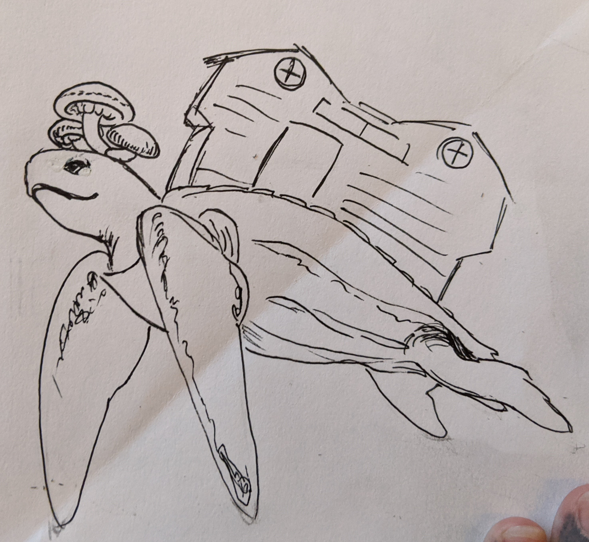
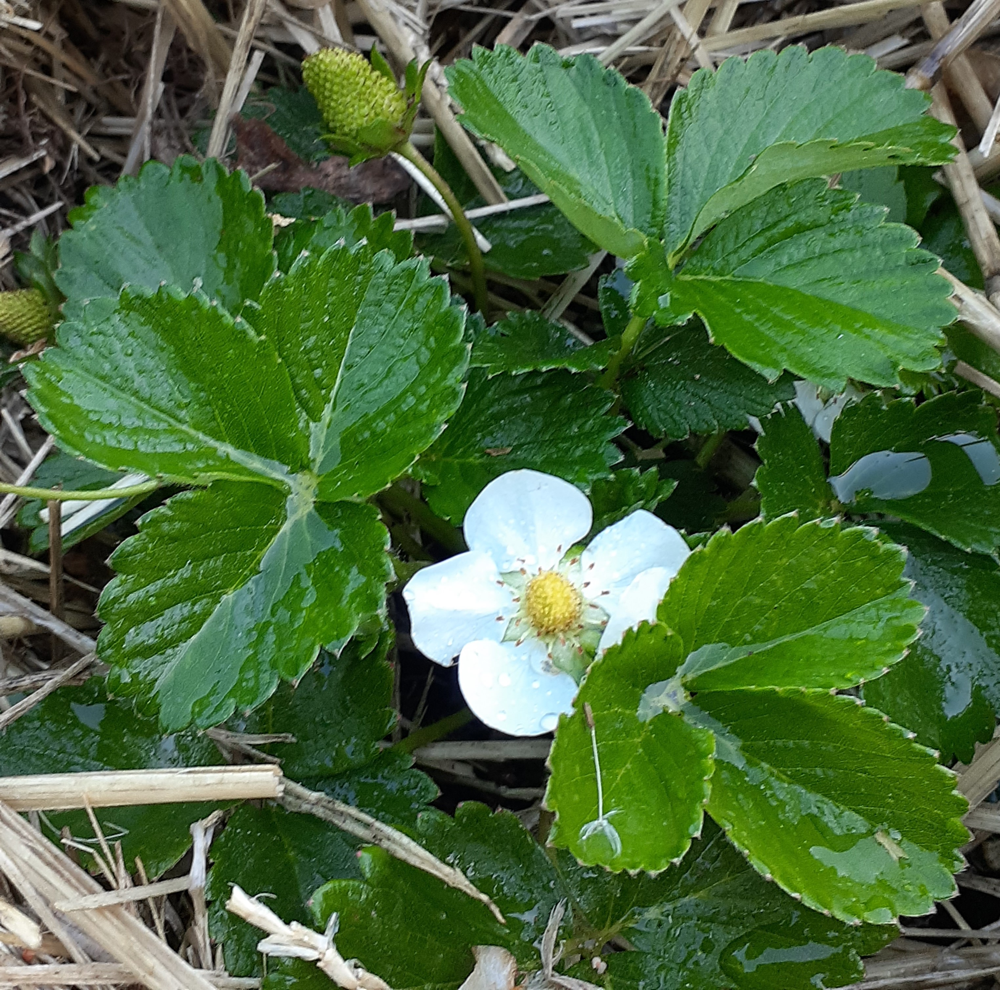
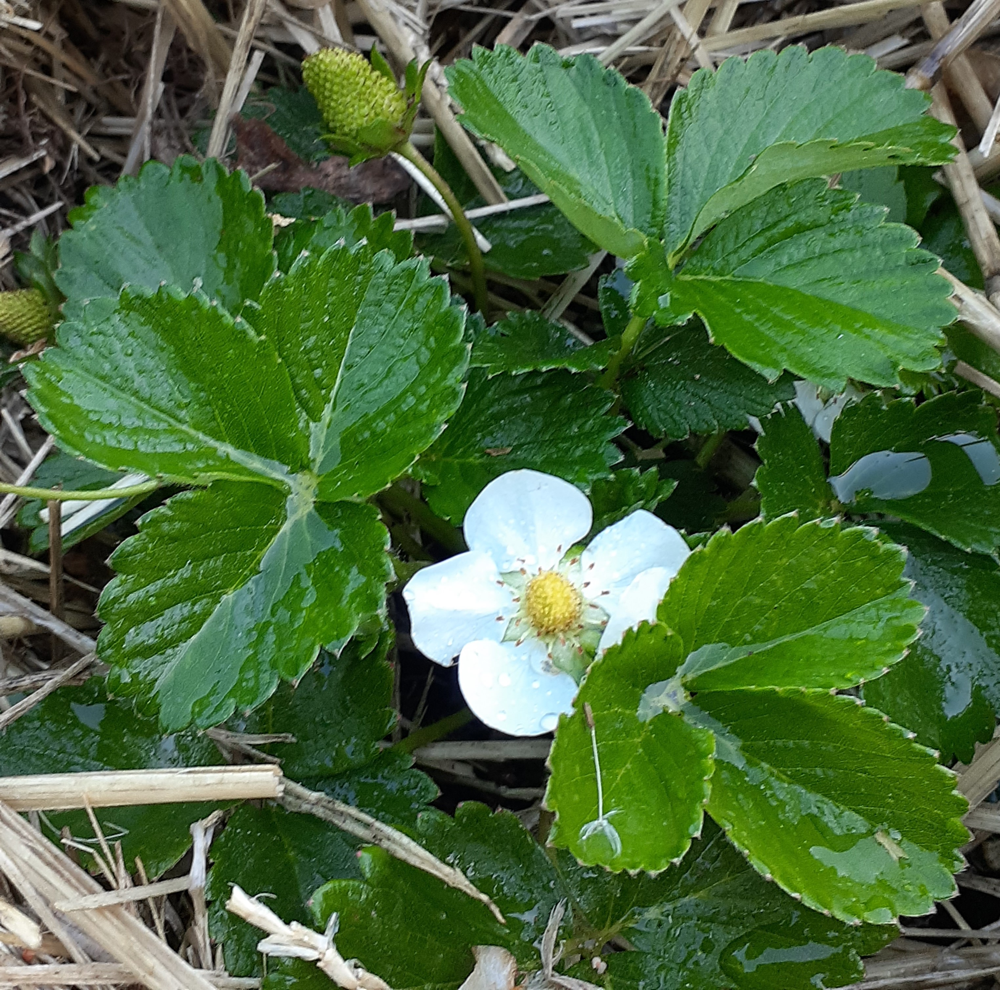

Fat Dragon Farm
Where Natural Beauty Meets Human Ingenuity
 

 Fat Dragon Farm is a community of farmers, healers, and makers situated on __ acres in _______. We grow our own food and medicine, build our
own homes and furniture, and design robotic helpers to make self-sufficiency easy for people all around the world. We do all this on a closed loop organic
u-pick farm just __ minutes from Portland. If you'd like to visit and take a look at our workshop, relax in our sauna, or just pick some berries while
enjoying a peaceful afternoon in a beautiful food forest, book a tiny house at our farm and allow us to introduce you to our little slice of paradise.
Stay with Us U-pick Farm Medicinal Herbs Spa Makerspace Tiny Houses Space-Saving Furniture Permaculture Robots Micro-Industry
Fat Dragon Farm is a community of farmers, healers, and makers situated on __ acres in _______. We grow our own food and medicine, build our
own homes and furniture, and design robotic helpers to make self-sufficiency easy for people all around the world. We do all this on a closed loop organic
u-pick farm just __ minutes from Portland. If you'd like to visit and take a look at our workshop, relax in our sauna, or just pick some berries while
enjoying a peaceful afternoon in a beautiful food forest, book a tiny house at our farm and allow us to introduce you to our little slice of paradise.
Stay with Us U-pick Farm Medicinal Herbs Spa Makerspace Tiny Houses Space-Saving Furniture Permaculture Robots Micro-Industry